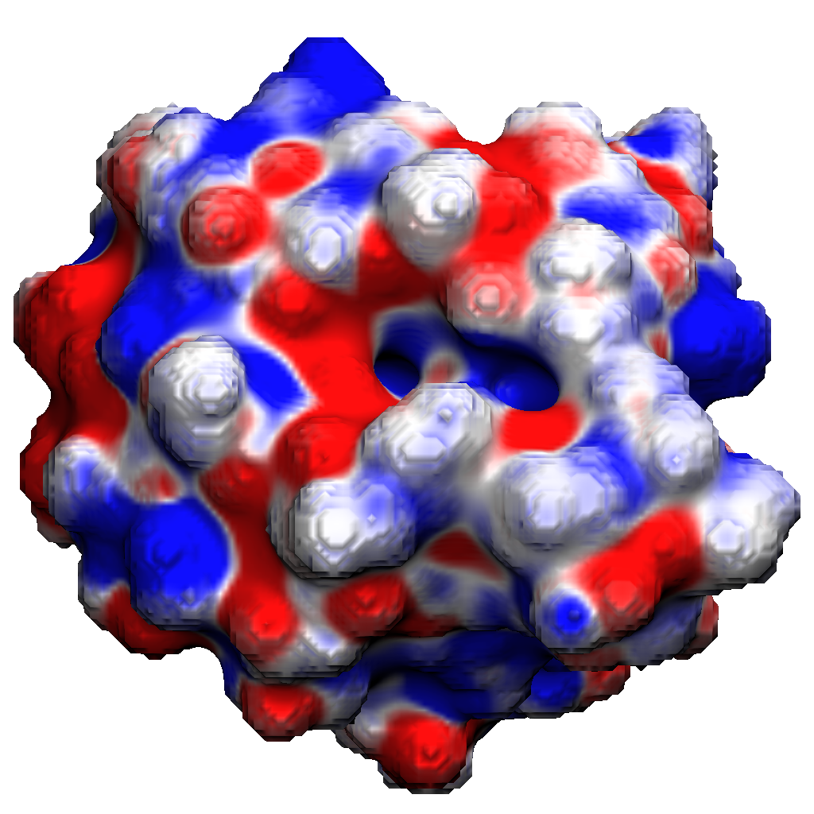
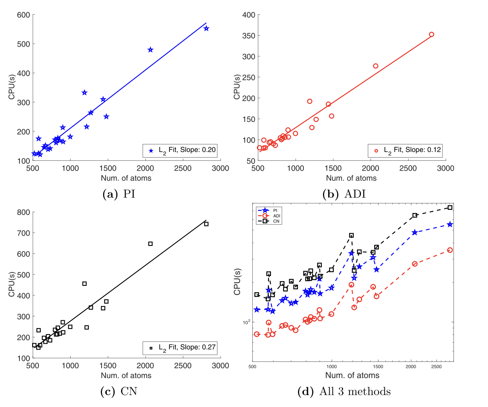
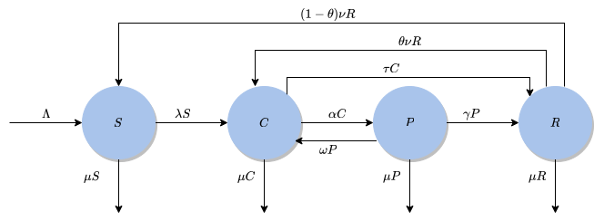

Research Overview
At the intersection of Scientific Computing, Mathematical Modeling, and Mathematical Biology.
Focus Areas
My work involves developing and implementing advanced numerical methods, finite difference schemes, Matched Interface and Boundary (MIB) methods, and Finite Element Methods (FEM), to solve multidimensional partial differential equations on high-performance computing platforms. Applications span drug design, protein engineering, and mathematical modeling of social systems.
Current Projects
Biomolecular Solvation
Developing a Variational Implicit Solvation Model incorporating Size-Modified Poisson-Boltzmann (SMPB) theory, diffuse interface approaches, and ensemble averaged electrostatics for accurate free energy calculations in drug design and protein engineering.
High-Order Numerical Schemes
Developing robust solvers for interface problems and stiff systems, with focus on three-dimensional p-Laplace equations using finite difference methods, efficient ADI time-stepping for parabolic equations, and MIB methods for complex geometry in solvation models.
Social Dynamics Modeling
Beyond physics-based modeling, I apply ODE systems to understand social phenomena. Recent work assesses the impact of intervention programs on gang dynamics using mathematical modeling approaches adapted from epidemiological compartmental models.
Computational Tools
Selected Visualizations


